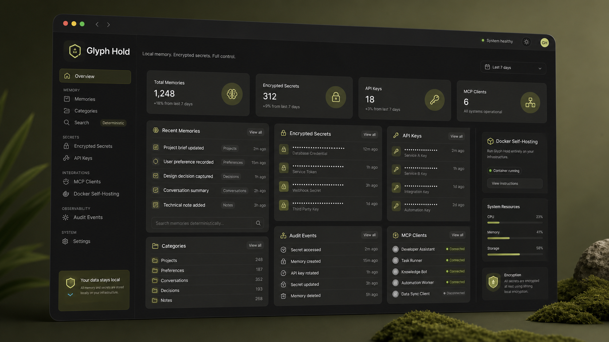

Durable memories
Store notes, decisions, procedures, project facts, people, preferences, and temporary context with categories, tags, confidence, and revision history.

A free, open-source, self-hosted memory and secrets service for AI agents. Give Hermes Agent, Codex MCP, and local assistants durable context, encrypted credentials, API keys, and audit history under your control.
Glyph Hold gives agents a shared place to remember the things that should survive the current chat: project context, procedures, preferences, decisions, and secrets that should only be revealed when explicitly requested. It is built for people looking for local AI agent memory that can be self-hosted for free.
View the project on GitHubWhy It Exists
Agents are useful when they remember stable context. Glyph Hold keeps AI agent memory separate from the model, visible in a dashboard, and reachable through a simple API.
Store notes, decisions, procedures, project facts, people, preferences, and temporary context with categories, tags, confidence, and revision history.
Store operational secrets encrypted at rest and reveal values only through explicit reveal endpoints. Secret values stay out of memory prefetch.
Create scoped API keys from the dashboard, then connect agents over HTTP or through the standalone Glyph Hold MCP server and Hermes memory provider.
Run it with Docker on port 5995. Data lives in SQLite, search uses SQLite FTS5, and the dashboard handles first-run setup.
Use Cases
Glyph Hold is designed for developers and power users who want agent memory without handing private context to a hosted service. Run it locally, connect agents with API keys, and keep the memory database and encryption key in your own environment.
Use the Hermes memory provider plugin to make Glyph Hold the external memory source for Hermes Agent, with prefetch and explicit memory tools.
Connect Codex and other MCP clients through the Glyph Hold MCP server for searchable memories, revision restore, and managed secret access.
Give custom agents and local assistants a deterministic HTTP API for durable project context, user preferences, procedures, and operational notes.
Run Glyph Hold with Docker and SQLite. No hosted AI service, vector database, embedding provider, or paid API is required by Glyph Hold itself.
Current Status
Glyph Hold v1.0.0 is Docker-ready and usable today for local agent memory and secrets. Keep backups of the mounted data directory and encryption key before upgrading, especially when storing encrypted secrets.
Install
Start locally, create the first dashboard account, then generate an API key for your agent.
GLYPHHOLD_KEY="$(openssl rand -hex 32)" && docker run -d --name glyphhold --restart unless-stopped -p 5995:5995 -v glyphhold-data:/data -e GLYPHHOLD_DB_PATH=/data/glyphhold.sqlite -e GLYPHHOLD_ENCRYPTION_KEY="$GLYPHHOLD_KEY" ghcr.io/dosk3n/glyphhold:latest && printf 'Save this Glyph Hold encryption key: %s\n' "$GLYPHHOLD_KEY"services:
glyphhold:
image: ghcr.io/dosk3n/glyphhold:latest
container_name: glyphhold
ports:
- "5995:5995"
volumes:
- ./data:/data
environment:
GLYPHHOLD_DB_PATH: /data/glyphhold.sqlite
GLYPHHOLD_ENCRYPTION_KEY: change-this-to-a-long-random-value
restart: unless-stoppedhttp://localhost:5995.Agent Connectors
Glyph Hold stays focused on the core service. Agent integrations live in separate repos and connect through the public HTTP API, so they can be updated independently.
Hermes
The Hermes plugin lets Hermes prefetch relevant Glyph Hold memories and use the full memory and secret tool surface, including revision restore and explicit secret reveal actions.
Roadmap
v1.0.0, Docker setup, dashboard, memories, secrets, API keys, MCP, and Hermes.
More connector hardening, stronger recovery flows, clearer docs, and broader agent examples.
More integrations and operational polish for dependable self-hosted agent memory.
FAQ
Yes. The Hermes memory provider plugin connects Hermes Agent to Glyph Hold through the public HTTP API for memory prefetch, memory management, and explicit secret reveal tools.
Yes. Codex can use Glyph Hold through the standalone MCP server, giving Codex access to memory search, prefetch, create, update, archive, revision restore, and secret tools.
Yes. Glyph Hold is open source under the MIT License and runs with Docker using SQLite for storage and SQLite FTS5 for search.
No. Glyph Hold does not call hosted LLMs, embeddings, vector databases, Ollama, or paid APIs. It stores and searches durable memory deterministically.